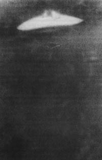

L'ovni photographié à Dalnegorsk (URSS)

Photographie (ci-contre) à Dalnegorsk (URSS).
Automne
Début des témoignages en Belgique évoquant des survols d'une plate-forme
triangulaire équipée de divers feux lumineux et capable d'évoluer silencieusement et lentement à très basse
altitude.
Richard F. Haines et Jacques Vallée procèdent à une série
d'analyses
approfondies et d'études photométriques sur le négatif noir et blanc original de la photo du Costa Rica prise le ,
afin de déterminer la nature de l'ovni photographié. Les résultats de leurs recherches n'ont pu qu'authentifier le
phénomène sans pour autant l'expliquer. Un des membres fondateurs du GEPAN, le
chercheur français Christian PerrinDeBrichambaut, examine la photographie en 1993-11 et
détermine que les zones lumineuses de l'ovni ne peuvent être expliquées que par une émission propre et non par les
reflets du Soleil. Les zones lumineuses de l'objet pourraient ainsi être dues à une forte ionisation de l'air
faisant appel à un type de propulsion inconnu. L'ingénieur définit ainsi non seulement la forme générale de l'objet,
mais aussi ses dimensions.
Un couple australien du Queensland ramasse 600 petites sardines dans le jardin après une ondée.